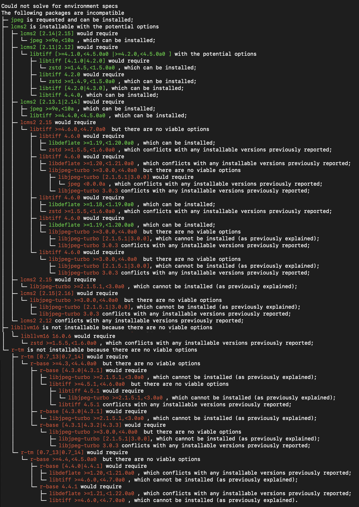

DSC #21: Quinn and the Trouble with Environments#
by Quinn Dombrowski
September 23, 2024

Note
It’s hard to believe we’ve been doing the DSC for 5 years now. This book tackles the topic of environments – specifically, the environment on your computer where you run your code. It’s been about a whole year since I started writing this. And I’m coming at it now from a better place: work switched out my laptop, so I actually had to follow my own early notes here to rebuild my environment and be able to get back to publishing DSC books.
My coding environment isn’t the only one that I’m rebuilding right now. I’ve filed for divorce. Bless Ann M. Martin for her work explaining divorce to kids: I literally brought out the graphic novel of Karen’s Witch when I broke the news to my kids. (They weren’t shocked, but they were super excited about Karen’s description of double holidays!)
Throughout this whole process, the Data-Sitters have been there for me, checking in and offering support and advice. So before we dive into Conda and Pip and all that coding environment goodness, let me start by saying that going home after a fun day out with friends shouldn’t fill you with dread. You shouldn’t feel like you have to constantly apologize for things to be okay. You shouldn’t be asking for permission all the time. You shouldn’t be afraid to say, “No, that’s not what I want” , and should know you’ll be heard. And there’s no shame in needing to be loved in the way(s) that are meaningful for you, even if you’re still figuring out what exactly that looks like.
If your own environment is dragging you down (even if you can talk yourself into it being fine), or if it isn’t what you need to feel like a happy and fulfilled person, you can change it. You really can. Even if you have kids and a mortgage. Or if it means taking a huge leap of faith with a job, or trying a new city. If you’re reading this, you’re still alive and today can be the day that you make radically different choices about what to do with your life. You’re truly not as stuck as you might think, and you might be shocked at how much better you feel on the other side of it.
The Trouble with Environments#
“Kindergarten baby, stick your head in gravy! Wash it off with applesauce and show it to the Navy!” sang Nicky.
“Mommy, make him stop!” cried Claire.
So begins BSC 21: Mallory and the Trouble with Twins, where everyone’s favorite babysitting horse-girl, Mallory Pike, is in the car with her seven siblings. The Pike family car has more than a little in common with my laptop: it’s chaos, and packed full of my data and code, and – most crucially – a bunch of different libraries that I need to run my code. And sometimes you update one library, and the rest of your libraries act like it’s Thanksgiving in a conservative family and one of the cousins has just shown up with weird tattoos, her hair cut short and dyed purple, and a girlfriend[1].
I’ve known for a long time that environments can be an issue, and I probably should be paying some attention to them instead of just blithely installing whatever, wherever, by whatever means is handy. But honestly, it felt more like when the dentist chides you about flossing. Would it be better if you flossed two, even three times a day? Sure. But it’s an annoying and time-consuming chore, and if you brush your teeth regularly and floss from time to time, you’re probably going to be fine. Same with environments, I figured. Most of the time my code ran fine, so why worry?
But then it took me most of a year to write DSC #20 - Xanda Rescues the Topic Model Disaster, and the library we use for publishing our books, JupyterBook, went through a major update that (as promised by the release notes) broke a bunch of things. Suddenly my laptop felt like the Pike family car, with libraries calling each other names and others sulking and unresponsive. I knew the time had come to channel Mallory and put things in their place:
When it comes to kids — my brothers and sisters, or any others — I’m pretty smart. For instance, I had figured out the seating arrangement for our outing to the mall. (It takes awhile to drive there.) I had put Margo in the front seat with Mom and Dad, since she gets carsick sometimes and riding in the front is less bumpy. I had put the triplets in the way back, where they could be jerks without bothering anybody, especially Nicky, whom they are apt to tease mercilessly. And in the backseat, I had put Claire, me, Nicky, and Vanessa, in that order. Sitting between Claire and Nicky, I could break up fights. And with Vanessa by the window, she could daydream or make up poems, lost in her own world, which is how she’s happiest.
If you’re new to doing computational text analysis, you can probably get away with not worrying about environments for a while. It’s okay to skip this one – certainly I, of all people, don’t need to lecture you about the joy and value of getting your environment situation straightened out. But when that day arrives for you too, you can count on the Data-Sitters Club to get you unstuck! (What’s the DSC? Check out chapter 2.)
What’s an environment?#
With software, “Where did you install it?” feels almost like a nonsense question, demanding no answer more precise than “on my laptop” or “on my phone”. On a Mac, there’s the Applications directory; Windows has installers that put software files in the right places before sticking an icon in the Start menu. On phones, apps show up as little icons once you’ve hit a button in an app store. By and large, that kind of software just works once you’ve installed it, with any interactions with your hardware and other software happening invisibly behind the scenes. Sometimes the seams show; there’s DH software written in Java, where you have to get the right version of Java installed for the software to run – which may be easier said than done. And installing Mallet (like we did in DSC #20) means having to keep track, at least at first, of where you put it.
Broadly speaking, an “environment” is just a context that some code runs in. Once you’re writing your own code that depends on libraries (code that other people have written to do a specific thing, which you usually need to install to use), you have to start to think a little more about environments.
Environments in Jupyter notebooks#
Jupyter notebooks make some aspects of environments very visible. When you create or run a notebook, you have to choose what kernel to use. Each of the coding languages supported by Jupyter notebooks has its own kernel; the kernel tells the notebook about the context in which the notebook cells should be interpreted – most significantly, what coding language the cells are written in. (There’s ways to override this with special commands, like how we’ve run R in a Python notebook before.)
If you’ve followed the most common installation approach for the Jupyter Notebook software, odds are it’s part of the massive Anaconda software suite, and you launch it either from the Anaconda launcher, or by just typing jupyter notebook into the Terminal. In that case, you’ll be using the version of Python that Anaconda has installed for its default environment. If you want to check on where the version of Python you’re using is, create a new cell in your Jupyter notebook and run the code !which python. (The ! is used to run code as if you’re typing it into the command line, which is why we use it to do things like install new libraries.) With the most typical Anaconda-based installation, you’ll see a path that looks like: /Users/your-user-name/anaconda3/bin/python. Curious what version of Python you’re running? Try !python --V.
Managing your digital spaces#
Do you need separate environments for your projects? It depends. There were a couple projects where I had used a separate environment because they involved a library with very specific requirements. This happens a lot with libraries related to machine learning, which frequently put out new releases, but the only version that works for the code in a given project is the one that was current when the project was created. If you have two projects like that, you could quickly run into problems if the two projects use different versions of the same library. If you just have one environment, using the version that makes one project work will break the other project.
I keep my digital spaces like my physical spaces: everything exists side-by-side with everything else, piled up together. The computational text analysis visualizations, a pile of wool, the multi-volume Russian etymological dictionary, a punchcard knitting machine from eBay, the copy of the Unicode 2.0 standard left behind by a friend who left the university, an electronic spinning wheel, a giant wood spinning wheel, yarn and scraps inter-mixed, a huge floor loom. That’s my office.

And that’s the way I love it. You never know what connections may come from having it all right there: sometimes you’re talking about medieval literature, and all of a sudden what you need to illustrate something is a loom. Or you’re showing someone the knitting machine, and the stitches remind you of data points in a text analysis visualization. The result is that my office certainly makes an impression – even when I’m not sitting there tying strings onto the ancient-looking wooden loom like some kind of time traveler.
But what if I could flip a switch and magically transform the space into “office hours mode” with some couches, a tea pot at the ready, and some snacks? Or hit a button for “project meeting mode” and get a large screen on one of the walls, some chairs, and several more power outlets? Physical spaces don’t work like that, but your digital spaces can.
Python environments#
Despite my hopes for making R a more regular part of my coding life, that hasn’t really happened. I use R whenever I need to (usually when running Associate Data-Sitter Mark Algee-Hewitt’s code), but I don’t get into the trouble with R libraries that I do with Python. If you use R and want to be more deliberate about your environments, Renv is a thing and there are ways to manage R and Python environments.
For Python, there’s not a single answer, or even a good consensus answer. Zoe LeBlanc (who helped us out in DSC #8) asked about managing environments on DH Twitter in 2020, and the results were very mixed, with some people vocally advocating for options that others decried. There’s at least eight different tools for Python environments, and part of the reason why there’s no consensus answer is that the choice depends on a lot of factors. What other frameworks are you using? Jupyter notebooks are more likely to tie you into the conda ecosystem than if you’re building websites with Django. Even your aesthetic preferences come into play: do you want something that does the absolute minimum job so you can optimize other parts of the process, or would you prefer to have something that makes a bunch of choices for you so you don’t have to think about them?
Our scenario#
For our purposes here, we’ll take my real-life scenario of running a project that publishes using JupyterBook. This would also apply if you have a collection of Jupyter notebooks (e.g. for doing text analysis and visualization) that you don’t run all the time, but you’d like to increase the odds of them working the way you remembered when you revisit them after 6 months or a year, regardless of what you’ve been up to on your computer in the meantime.
Let’s also assume that you want to do this as easily as possible, don’t mind giving up some control, and don’t terribly mind a slightly kludgy solution if it makes things a little more straightforward than doing it elegantly.
(Ana/mini)conda#
If you’re already using Jupyter notebooks, you may also have Anaconda installed. Anaconda is a massive, hulking thing that installs thousands of libraries, several graphical user interfaces, and a bunch of other things. It needs at least 5 GB of disk space just to install, which I’ve found to be a problem for grad students who just may not have that much space free. (Also, there was a dust-up over licensing for academic institutions recently, even though the company quickly backpedaled.)
If you don’t have Anaconda, and don’t want to commit to the whole package (very reasonable!), you can still use Conda to get your environment in order by installing miniconda – which isn’t a Python package, but a separate collection of things installed as regular software on your system.
Conda vs Pip#
Conda and Pip are both ecosystems of Python libraries: places where you can go to install libraries, update existing versions, and so on. Pip has more libraries than Conda – including some niche but useful ones. You can find everything available through Pip in the Python package index.
Conda, on the other hand, is a little more complicated. Libraries are available through channels. The default channel is maintained by Anaconda the company, and all the packages are tested to play well together. That said, it has a relatively limited selection; there’s another channel called conda-forge that has more packages, and more up-to-date versions.
I’d used both Conda and Pip to install Python libraries for years without giving it a lot of thought – which, let’s face it, is part of how I got into this environment mess to begin with. Trying to rationalize my system (at least for purposes of the DSC) using environments gave me a chance to rethink that when I had to start over from scratch anyway with a new work laptop.
While it’s entirely possible to mix-and-match environment tools, installers, etc., it felt like the most straightforward route to getting my environment in order was to stick with one ecosystem, at least as much as possible. So I went with Conda for creating the environment, and for installing as many things as I could.
Installing and configuring Miniconda#
On my new laptop[2], I installed Miniconda, then added the conda-forge channel to get access to a wider range of software by typing this in my terminal:
conda config --add channels conda-forge
Then I ran the following line in the terminal so that conda always starts by looking in conda-forge:
conda config --set channel_priority strict[3]
Creating a basic environment#
When you create an environment, you can give it a list of all the things you want it to install upfront. You can also point it to a file that has a list of all the things – but when you’re starting out, you probably won’t know what those are. It’s okay to start off simple with the things you know you’ll need, and add more as you go. For instance, if you know for sure that you want Python and Jupyter notebooks and R, you could run the following command[4]:
conda create -n my-environment-name python jupyter r
The thing that comes after -n is the name of the environment, and you’ll use that to activate (or deactivate) that particular environment. You can name it whatever, but if it’s multiple words, it’s best to not use spaces– use hyphens-between-words or maybe CamelCase to differentiate the words.
What you’ll see is a lot of text scrolling through as Conda figures out all the dependencies for all the things you’ve asked for – and these lists can get long. Then it’ll ask if you want to proceed. Type y and hit enter.
Then go get a coffee or a snack because it’s probably going to be a while while everything installs.
Working in an environment#
Once you finish creatine a new environment, you should see a helpful message telling you that to activate the environment, type into a terminal:
conda activate my-environment-name
If you’ve done this correctly, you should see the name of the environment in parentheses at the very start of your terminal prompt, before the name of the computer or the directory you’re currently in. It’s a handy way to check: you can just look at any terminal window and immediately see if you have a specific environment active.
To deactivate, type in: conda deactivate and the environment name in parentheses will disappear.
If you’re just using the standard Jupyter notebook interface, you’d type this into the terminal before typing jupyter notebook, so that the notebook launches in your environment that has all the things you need. If you’re using another interface like VS Code, when you open a notebook and run the first cell, you have to choose a kernel, and it should give you the option of selecting your environment if you pick “Select another kernel” → “Python environments” → then choose the environment you created.
Do this every time you work with the code for that project (and deactivate the environment when you’re not working on that project), and over time you’ll end up with a pretty extensive pile of packages that you’ve installed. It’s better to try to install things using conda first (conda install your-package-name), but if a package isn’t available that way, it’s not a problem to use pip (pip install your-package-name).
Some libraries, like spacy and NLTK (which we’ve used a lot for the Data-Sitters Club), require you to download modules or other data in order to actually work. You can do that outside of conda and it’ll work fine, but it will mean there’s additional setup steps for anyone else you share your environment with. Fortunately, people have put together conda wrappers for these necessary downloads that make them look and act like any other library in the ecosystem. For NLTK you can use conda install nltk_data, and for spacy models, you can use conda install spacy-model-en_core_web_smor any other language model option listed in the spacy models feedstock GitHub repo.
Exporting and importing an environment#
Let’s say you need to get a new collaborator set up with the project, and all the packages that it uses. The easiest way to do that is to export a file called environment.yml. This has a list of all the packages that you’ve installed using both conda and pip[5].
If you have a terminal open, and you’ve activated the environment you want to export, you can run: conda env export -f environment.yml --no-builds.
The –no-builds parameter removes parameters specific to your operating system, which was important when going from my old laptop to my new one. Once you have that file, you can recreate the environment by creating a new conda environment using that environment.yml file, running: conda env create -f environment.yml. (Just make sure you’re in the directory with your environment.yml file when you run it or you’ll get an error.)
Want to try it out? You can make your very own local environment for building the Data-Sitters Club website using the environment.yml file in our GitHub repo.
Troubleshooting environments#
Wrangling libraries can be … fiddly. And the messages that you get from conda can feel like they’ve got big pedantic jerk vibes. Sometimes, an attempt to simply install a library will get you a vomit-tree with a lot of red:

The news that this or that version “cannot be installed (as previously explained)” is not really what you need to hear. There’s not a set of specific steps guaranteed to fix this, but in the spirit of “have you turned it off and turned it back on again?”, straight up uninstalling and reinstalling (perhaps a different version of) core things like r-base and/or Python, or some of the specific dependencies that it complains about, can help the environment reach a place where it’s willing to install the thing you need. To finally get the environment to install the r-tm package (used in DSC 10 for PCA), it took me 25 more steps, including uninstalling r-base, unsuccessfully attempting to install r-base four times before it installed successfully – which involved me installing a version of the Python jpeg library it was happy with.
Persistence and patience (with yourself, as much as the machine) and resisting despair are key for troubleshooting your environment… whether you’re trying to have a reliable and reproducible space on your computer for running your code, or if you’ve realized your life isn’t set up in a way that allows you to thrive.
You can change your environment#
I bet my friends who think a lot about pedagogy would have some … feedback. Centering the difficulty that people have experienced with Python environments – to put it more bluntly, the trauma that environment wrangling has caused people – is that the best way to approach this topic? But it’s a real thing, and considering how much we emphasize that digital humanities is people, trying to lead with ✨don’t stress, environments are totally manageable✨ would fall flat in the face of how people actually talk about them.

(Yeah that’s the same David Mimno who maintains the topic modeling tool Mallet, and was the PhD advisor for Xanda who saved the topic modeling disaster in DSC 20.)
Maybe you’re one of the many people who’s tried – probably more than once – to set up project-specific environments on your computer, but it’s been too hard, or you’ve gotten frustrated, or doing it consistently just hasn’t stuck. Or maybe you’ve heard about “environments” but when you looked at the instructions, your eyes glazed over and you quickly closed the tab… or maybe let it fester in one corner of your browser window until you had to do a computer reboot.
I get it. This was me too. For so long it was easier to just shrug and say, “I’ve tried this before, and it didn’t work. Why bother?”
People really are working on better solutions for Python environments, and if the Conda approach I’ve laid out here isn’t doing it for you, there are many others. You can probably get away without some kind of environment wrangling up to a certain point, but confronting your anxiety and trying (or trying again) to actually set up and consistently use an environment for each project – it’s an act of self-care. (Even if it works out to be mostly harm reduction.) Even if it hasn’t worked for you before, today can be the day you make a different set of choices.
I’ve always loved stories with parallel universes or alternate histories. During the years my fellow Data-Sitters were reading The Baby-Sitters Club[6], I was obsessed with the Super Nintendo JRPG Chrono Trigger, whose “game over” screen still haunts me.

This doesn’t have to be your Python environment, or your life. Every few days, I’m caught off-guard by a feeling of gratitude that in this timeline, a day came when I made fundamentally different choices. And that my community showed up for me, to help me through the hardest weeks of my life[7]. DH is people. People who will be there, whether you want to throw your laptop out the window because you cannot get the infuriating dependency tree to behave, or if you’re having a panic attack because what you need to do next with your life is just too much for you to handle in that moment.
Dedicated Python environments for your individual projects are worth investing in. So is community. It’s not always easy, but I bet you’ll be grateful you did.
Suggested citation#
Dombrowski, Quinn. “DSC #21: Quinn and the Trouble with Environments.” The Data-Sitters Club. September 23, 2024.